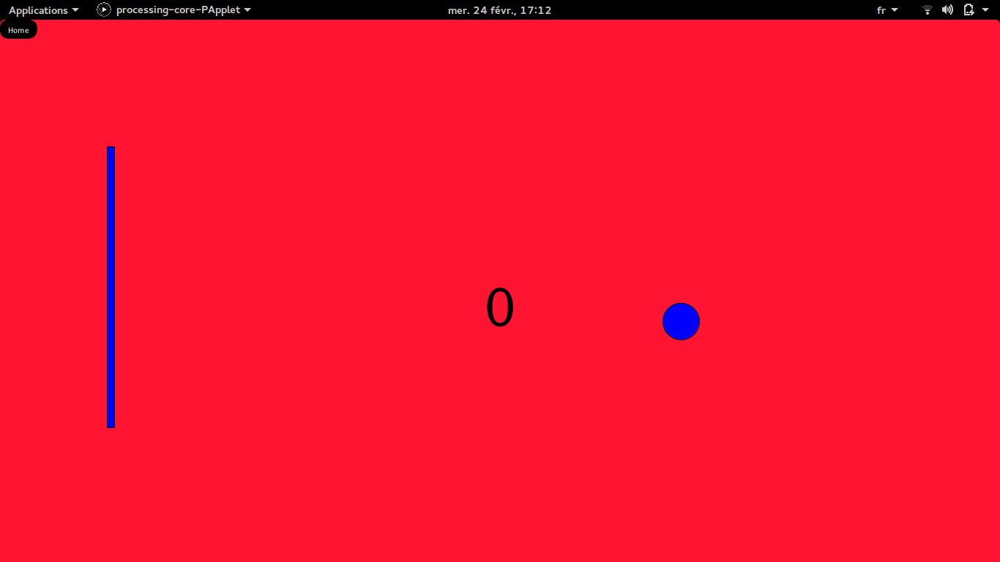
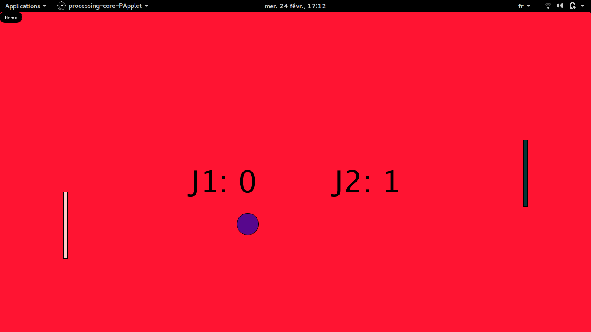

Le Pong

Présentation
Il s'agit de réaliser un Pong, jeu mythique de l'histoire informatique. Votre jeu doit comporter au minimum 3 écrans différents :
Vous devez également concevoir un système de score ainsi qu'un système de vie, histoire que le jeu se termine un jour. Enfin, il vous faudra imaginer et concevoir un comportement particulier original lors de la partie. Exemple, tous 5 rebonds, la balle accélère.
- Un écran d'accueil avec au moins un bouton permettant de lancer le jeu ;
- Un écran de jeu
- Un écran avec affichage du score de la partie et du meilleur score jamais réalisé.
Réalisation
Un menu d'accueil
Afin d’accéder aux différentes fonctionnalités offertes par le programme, un menu permet de:
- Accéder au mode solo
- Accéder au mode multijoueur
- Accéder au mode meilleur score
- Quitter le jeu
Un mode solo
Le mode solo permet de jouer avec une raquette et une balle qui rebondit entre la raquette et le bord de l'écran. La raquette étant controlée par la souris.
La difficulté augmente grâce à la reduction de la taille de la raquette et l'augmentation de la vitesse de la balle.
Un mode multi
Le mode multijoueur permet de jouer contre un adversaire, les deux raquettes sont semblables controlées par les touches du clavier(Z,S,UP,DOWN). La partie s'arrete au bout de 5 points marqués par l'un des joueurs.
Une gestion des highscores
Les Highscores sont stockés dans un fichier texte afin de rester lors de l'interuption du programme.
void putHighscore() {
highscoreWrite = createWriter("highscore.txt");//Créé un Writter pour écrire dans le fichier
highscoreWrite.println(highscoreSolo); //Ecrit le meilleur score
highscoreWrite.flush();//Envoye le meilleur score dans le fichier
highscoreWrite.close();//Ferme le fichier et supprime le Writter
}